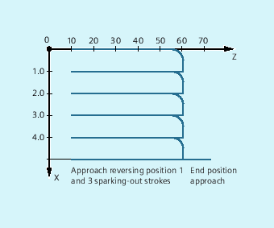

With this mode of oscillation, an infeed motion may only be executed at the reversal points or within defined reversal areas.
Depending on the requirements, the oscillation movement can be continued or stopped until the infeed has been executed completely.
The parameters for oscillation should be defined before the movement block containing the assignment of infeed and oscillating axes and the infeed definition (see "Asynchronous oscillation (OS, OSP1, OSP2, OST1, OST2, OSCTRL, OSNSC, OSE, OSB)").
| Position of reversal point 1 |
| Position of reversal point 2 |
| Stopping time at reversal point 1 in seconds |
| Stopping time at reversal point 2 in seconds |
| Feed for oscillating axis |
| Set or reset options |
| Number of sparking-out strokes |
| End position |
| Enable axis for oscillation |
The following synchronization conditions can be defined:
Suppress infeed until the oscillating axis is located within a reversal area(ii1, ii2) or at a reversal point (U1, U2).
Stop oscillation motion during infeed at reversal point.
Restart oscillation movement on completion of partial infeed.
Define start of next partial infeed.
| when…, do… |
| whenever…, do… |
Assigning oscillating and infeed axes:
OSCILL[<oscillating axis>]=(<infeed axis 1>,<infeed axis 2>,<infeed axis 3>)Defining total and partial infeed:POSP[<infeed axis>]=(<end position>,<partial length>,<mode>)
| Assign infeed axis or axes for oscillating axis |
| Define complete and partial infeeds (see Section "File and Program Management") |
| End position for the infeed axis after all partial infeeds have been traversed. |
| Length of the partial infeed at reversal point/reversal area |
| Division of the complete infeed into partial infeeds = Two residual steps of equal size (default); = All partial infeeds of equal size |
No infeed must take place at reversal point 1. At reversal point 2, the infeed is to start at a distance of ii2 before reversal point 2 and the oscillating axis is not to wait at the reversal point for the end of the partial infeed. Axis Z is the oscillating axis and axis X the infeed axis.
| Program code | Comment |
|---|---|
| DEF INT ii2 | ; Define variable for reversal area 2 |
| OSP1[Z]=10 OSP2[Z]=60 | ; Define reversal points 1 and 2 |
| OST1[Z]=0 OST2[Z]=0 | ; Reversal point 1: Exact stop fineReversal point 2: Exact stop fine |
| FA[Z]=150 FA[X]=0.5 | ; Oscillating axis Z feedrate, infeed axis X feedrate |
| OSCTRL[Z]=(2+8+16.1) | ; Switch off oscillation motion at reversal point 2; After delete distance-to-go, spark-out and approach end position; After delete distance-to-go, approach reversal position |
| OSNC[Z]=3 | ; Sparking-out strokes |
| OSE[Z]=70 | ; End position = 70 |
| ii2=2 | ; Set reversal point range |
| WAITP(Z) | ; Enable oscillation for Z axis |
| Program code | Comment |
|---|---|
| WHENEVER $AA_IM[Z]<$SA_OSCILL_REVERSE_POS2[Z] DO $AA_OVR[X]=0 $AC_MARKER[0]=0 | ; If the actual position of oscillating axis Z in MCS is less than the start of reversal range 2, then always set the axial override of the infeed axis X to 0% and the bit memory with index 0 to the value 0. |
| WHENEVER $AA_IM[Z]>=$SA_OSCILL_REVERSE_POS2[Z] DO $AA_OVR[Z]=0 | ; If the actual position of the oscillating axis Z in MCS is greater than the reversal position 2, then always set the axial override of the oscillating axis Z to 0%. |
| WHENEVER $AA_DTEPW[X] == 0 DO $AC_MARKER[0]=1 | ; If the remaining distance to go of the partial infeed is 0, then always set the bit memory with index 0 to the value 1. |
| WHENEVER $AC_MARKER[0]==1 DO $AA_OVR[X]=0 $AA_OVR[Z]=100 | ; Whenever the bit memory with index 0 is equal to 1, then set the axial override of the infeed axis X to 0%. As a consequence, a premature infeed is prevented (oscillating axis Z has still not left reversal area 2, but infeed axis X is ready for a new infeed). Set the axial override of oscillating axis Z from 0% (action of the 2nd synchronized action) back to 100% to move. |
| Program code | Comment |
|---|---|
| OSCILL[Z]=(X) POSP[X]=(5,1,1) | ; Start the axes; Oscillating axis Z is assigned axis X as infeed axis.; Up to end position 5, axis X should travel in steps of 1. |
| M30 | ; End of program |
See also:
Oscillation controlled by synchronized actions (OSCILL): Further information